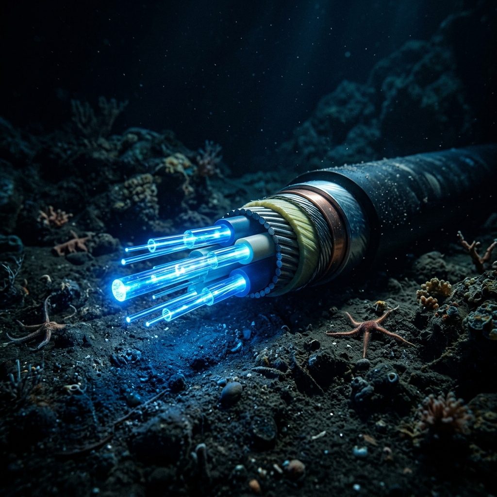
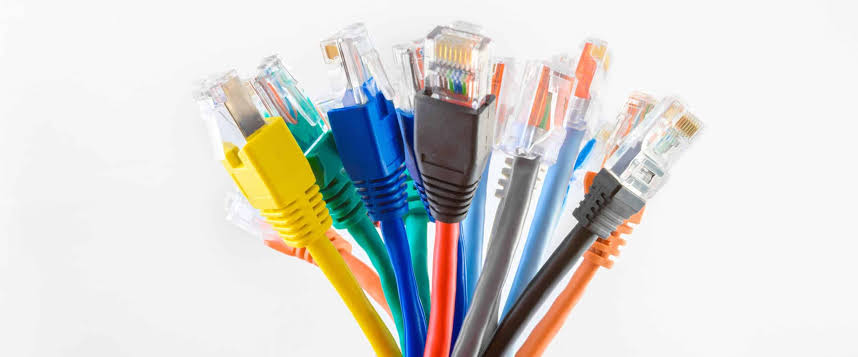
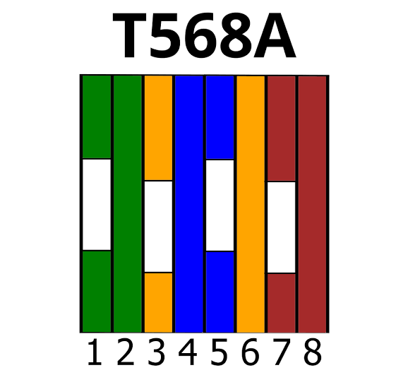
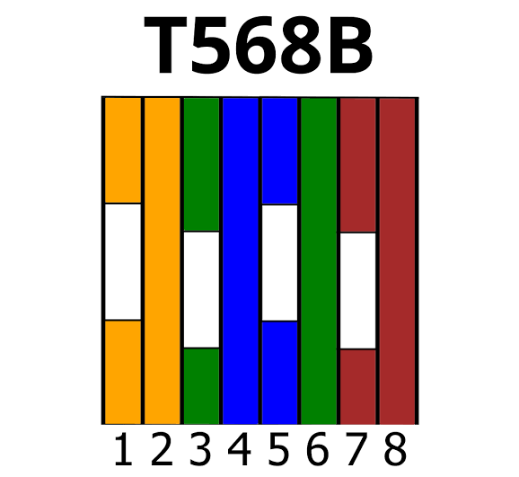
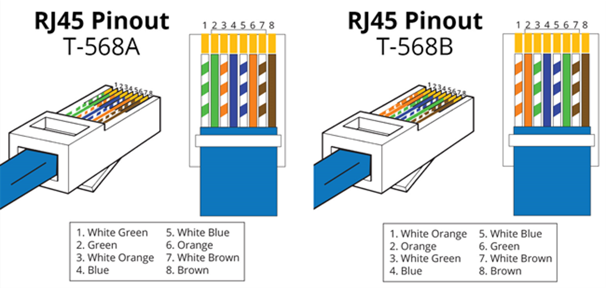
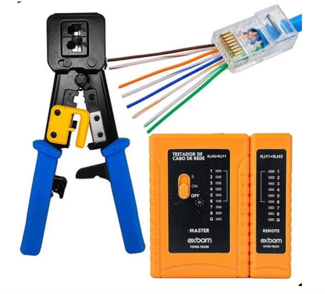

A ESPINHA DORSAL
E O LABORATÓRIO
Meios Físicos, Internet Global e Cisco Packet Tracer
O QUE É UMA REDE?
"Rede é um conjunto de dispositivos..."
...interligados para compartilhamento de recursos, informações e serviços.
LAN (Local Area Network)
🏢 A Rede Local
A infraestrutura base das empresas, salas de aula e residências. Abrange distâncias curtas (como um prédio ou andar) unindo computadores para compartilhamento rápido.
MAN (Metropolitan Area Network)
🏙️ A Rede Metropolitana
Interliga diversas LANs dentro do perímetro de uma cidade ou campus universitário gigante. O provedor local de fibra do bairro é um exemplo clássico.
VLAN (Virtual LAN)
🔀 A Divisão Lógica
Permite fatiar um único switch físico em várias redes independentes e isoladas, como se fossem equipamentos separados (Ex: Rede Visitantes e Rede Financeiro).
CLIENTE-SERVIDOR
🏦 O Controle Centralizado
Um chefe (Servidor) controla todos os recursos. Altamente seguro e escalável. Exemplo: Caixas Eletrônicos dependem de um Servidor Central do Banco.
⭐ ESTRELA (Star)
🔄 O Ponto Central
Todos os dispositivos são conectados a um centralizador (Switch). Se o Switch queimar, a rede inteira para.
🌳 ÁRVORE (Hierárquica)
🏢 A Base da Internet
A fusão de Estrela e Barramento. Organiza a rede em hierarquia. É o padrão oficial de grandes empresas, permitindo expansão em massa.
A ESPINHA DORSAL DA INTERNET

Cabos Submarinos (Backbone)
A nuvem não está no céu, ela está no fundo do mar. 99% de todo o tráfego intercontinental de dados viaja através de uma espessa rede de cabos de fibra óptica depositados no fundo dos oceanos. É isso que compõe a verdadeira WAN global.

CABEAMENTO ESTRUTURADO
Enquanto a fibra óptica conecta continentes inteiros, as redes locais (LAN) e as nossas casas dependem fortemente de cabos metálicos de cobre (Par Trançado) para conectar PCs, Roteadores e Switches na última milha.
COMUNICAÇÃO ETHERNET
Para a comunicação em redes Ethernet, usamos principalmente 4 dos 8 fios presentes no cabo:
dois para transmitir dados (TX - Transmit)
dois para receber dados (RX - Receive)
PADRÃO T568A

Padrão original oficial.
Historicamente começava com o par Verde/Branco e Verde antes do
Laranja.
PADRÃO T568B

Padrão amplamente adotado e dominante na indústria hoje.
Começa com o Laranja/Branco e
Laranja.
Cabo Direto (Straight-Through)
A-A ou B-B
Equipamentos Diferentes
Usa o mesmo padrão (568A ou 568B) nas duas pontas. É o cabo padrão utilizado para conectar dispositivos de naturezas distintas, como por exemplo, ligar um PC a um Switch ou um Roteador a um Switch.
Cabo Direto (Esquema)

Cabo Crossover (Cruzado)
A-B (Invertido)
Equipamentos Iguais
Cada ponta usa um padrão diferente (uma 568A e a outra 568B), invertendo os pares de transmissão e recepção. Utilizado para conectar dispositivos da mesma natureza diretamente, como PC com PC ou Switch com Switch.
Cabo Crossover (Esquema)

Mão na Massa: Confecção do Cabo

PASSO A PASSO
- Corte o cabo no comprimento desejado.
- Desencape a ponta do cabo (aprox. 2 cm).
- Desembarace e desenrole os pares de fios.
- Alinhe os fios na ordem correta do padrão escolhido (T568B é o padrão).
- Corte os fios para que fiquem retos e uniformes.
- Insira os fios alinhados no conector RJ-45, garantindo que o revestimento do cabo entre um pouco no conector.
- Crimpe o conector firmemente com o alicate.
- Teste o cabo com o testador para garantir a continuidade correta.
Agora é com vocês! Vamos criar cabos diretos.
SEQUÊNCIA T568B
A sequência correta das cores para o Padrão T568B, que é o mais utilizado para a
crimpagem de cabos de rede diretos.
Ao olhar para o conector RJ-45 de frente (com a trava para baixo), a ordem dos
pinos e as cores dos fios devem ser as seguintes, da esquerda para a direita:
- 1. Branco-Laranja (W-O: White-Orange) - Transmite Dados (TX+)
- 2. Laranja (O: Orange) - Transmite Dados (TX-)
- 3. Branco-Verde (W-G: White-Green) - Recebe Dados (RX+)
- 4. Azul (Bl: Blue)
- 5. Branco-Azul (W-Bl: White-Blue)
- 6. Verde (G: Green) - Recebe Dados (RX-)
- 7. Branco-Marrom (W-Br: White-Brown)
- 8. Marrom (Br: Brown)
O QUE É A INTERNET?
A Internet é uma rede mundial de redes interligadas, que permite a comunicação e o compartilhamento de informações entre bilhões de dispositivos no mundo todo.
🧠 Conceito Técnico:
“A Internet é uma estrutura descentralizada, baseada no protocolo TCP/IP, que interliga redes de computadores públicas e privadas, promovendo o intercâmbio de dados entre dispositivos e usuários.”
— COMER, Douglas E. Redes de Computadores e Internet. Grupo A, 2016.
COMO FUNCIONA?
- 1. Dispositivos → conectam-se a redes locais (LANs, Wi-Fi, 4G/5G).
- 2. Essas redes → se conectam à Internet via roteadores, provedores e cabos de fibra óptica.
- 3. Dados viajam em pacotes, organizados e enviados por meio de protocolos (como TCP/IP, HTTP, DNS etc).
A EVOLUÇÃO DA INTERNET
ARPANET
Primeira rede experimental criada pelo Departamento de Defesa dos EUA. Base para a Internet moderna.
Primeira conexão internacional
Inglaterra e Noruega se conectam à ARPANET. Nasce a ideia de uma rede global.
A EVOLUÇÃO DA INTERNET
Criação do protocolo TCP/IP
Torna-se o padrão da ARPANET, permitindo comunicação entre redes distintas. É o "código da Internet".
WWW (World Wide Web)
Criada por Tim Berners-Lee. Surge a web como conhecemos hoje (com URLs, HTML e navegadores).
A EVOLUÇÃO DA INTERNET
Internet comercial
A internet deixa de ser exclusiva para fins acadêmicos e militares e passa a ser usada comercialmente.
Criação do Google
Otimiza o acesso à informação. A web se torna mais navegável e acessível.
A EVOLUÇÃO DA INTERNET
Popularização dos smartphones
A internet passa a ser móvel, com o lançamento do iPhone e apps conectados.
Ascensão do Cloud Computing
Dados e aplicações migram para servidores em nuvem. Redes se tornam essenciais.
A EVOLUÇÃO DA INTERNET
Expansão do 5G
Novas possibilidades para IoT, cidades inteligentes, automação e tempo real.
A Revolução da IA Generativa
Explosão de IAs como ChatGPT integradas à Web. Máquinas passam a raciocinar, gerar texto, código e imagem em milissegundos.
E qual será o próximo marco?
A Internet Quântica e o 6G estão batendo na
porta.
Qual será a próxima grande revolução das redes?
OPERAÇÃO FANS: RECONHECIMENTO
RED TEAM
STATUS: ATIVO
Missão: Mapeamento Passivo (Footprinting)
Vocês foram recrutados para a Fase 1 de uma auditoria. O primeiro passo de um ataque ou defesa é reconhecer o terreno. Tragam a planta lógica da FANS.
- Identifiquem Roteadores, Switches, Access Points e Servidores pela faculdade.
- Analisem o cabeamento: São Diretos ou Crossovers?
- Deduzam a arquitetura: Cliente-Servidor ou Ponto a Ponto?
⚠️ REGRA DE OURO (Stealth Mode)
A investigação é apenas visual. Não desconectem cabos nem acessem equipamentos fisicamente. Se a TI da FANS for alertada, a missão falhou!
CISCO PACKET TRACER
Ambiente de Simulação
Hoje vamos sair da teoria. Vocês usarão o Packet Tracer para projetar, configurar e testar redes como verdadeiros engenheiros, sem o risco de queimar equipamentos reais.
Como Acessar:
- Faça login na plataforma Netacad.
- Acesse o curso "Getting Started".
- Baixe a versão para Windows (64-bit).
- Instale usando as opções padrão.
A Interface:
- Workspace: Área em branco para desenhar.
- Devices: Equipamentos na base inferior.
- Connections (Raio): Cabos de comunicação.
- Play/Realtime: Botões de simulação de tempo.
CONSTRUINDO UMA LAN
Desafio Prático 1:
1. Dispositivos Finais
Arraste 3 End Devices (PCs) para a tela.
2. Concentrador (Switch)
Arraste 1 Network Device (Switch 2960) para o centro.
3. Cabeamento Estruturado
Qual cabo você usa para ligar o PC ao Switch? Direto ou Crossover? Faça as ligações.
Topologia Estrela
FIM DA AULA 03
Hora de salvar seus projetos no Packet Tracer!